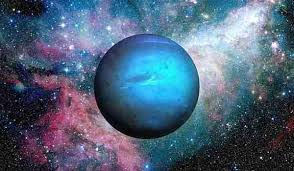

|

NEPTÜN
Neptün, Güneş’e en uzak ve sekizinci gezegendir. Aynı zamanda Güneş Sistemi’nin en rüzgarlı, en soğuk ve en gizemli gezegenlerinden biridir.
Yapı olarak Uranüs’e benzeyen Neptün, bir buz devi olarak sınıflandırılır. Atmosferi büyük oranda hidrojen, helyum ve metan gazlarından oluşur.
Bu metan gazı, gezegenin derin mavi rengini verir ve Neptün’e kendine özgü bir görünüm kazandırır.
Neptün’ün yüzeyi katı değildir; gezegen, yoğun gaz tabakalarıyla çevrili bir çekirdekten oluşur. Güneş’ten son derece uzak olduğu için, yüzey
sıcaklığı -220°C civarındadır. Buna rağmen gezegenin atmosferinde devasa fırtınalar ve inanılmaz hızda rüzgarlar gözlemlenir. Bu rüzgarların hızı
saatte 2000 kilometreye kadar ulaşabilir, bu da Neptün’ü Güneş Sistemi’nin en şiddetli hava koşullarına sahip gezegeni yapar.
Neptün’ün atmosferinde zaman zaman “Büyük Karanlık Leke” adı verilen dev bir fırtına görülür. Bu fırtına, Jüpiter’deki Büyük Kırmızı Leke’ye benzer
şekilde devasa bir kasırgadır. Gezegenin hızlı rüzgarları ve karanlık fırtınaları, enerjisini muhtemelen iç yapısındaki sıcaklıktan almaktadır;
çünkü Neptün, Güneş’ten aldığı enerjiden daha fazlasını uzaya yayar.
Neptün, Güneş etrafında bir tam turunu yaklaşık 165 Dünya yılında tamamlar. Yani 1846’da keşfedilmesinden bu yana sadece bir kez Güneş çevresindeki
yörüngesini tamamlamıştır. Kendi ekseni etrafındaki dönüşünü ise yaklaşık 16 saatte bitirir.
Gezegenin 14 bilinen uydusu vardır. Bunların en büyüğü Triton’dur. Triton, Neptün’ün ters yönünde (retrograd) döner, bu da onun muhtemelen geçmişte
Neptün’ün çekim alanına girmiş bir cüce gezegen olduğunu düşündürür. Triton’un yüzeyinde donmuş metan ve azot bulunur, ayrıca aktif buz volkanlarının
(kriyovolkanların) varlığı da gözlemlenmiştir.
Neptün’ün zayıf ama belirgin halkaları vardır. Bu halkalar, toz ve kaya parçalarından oluşur ve karanlık oldukları için teleskopla zor seçilir.
Sonuç olarak Neptün, Güneş Sistemi’nin sınırında yer alan, aşırı koşullara sahip ve hâlâ birçok yönü tam olarak anlaşılamamış bir gezegendir.
Güçlü rüzgarları, derin mavi rengi ve gizemli atmosferiyle evrenin düzeni hakkında önemli ipuçları taşır.
|